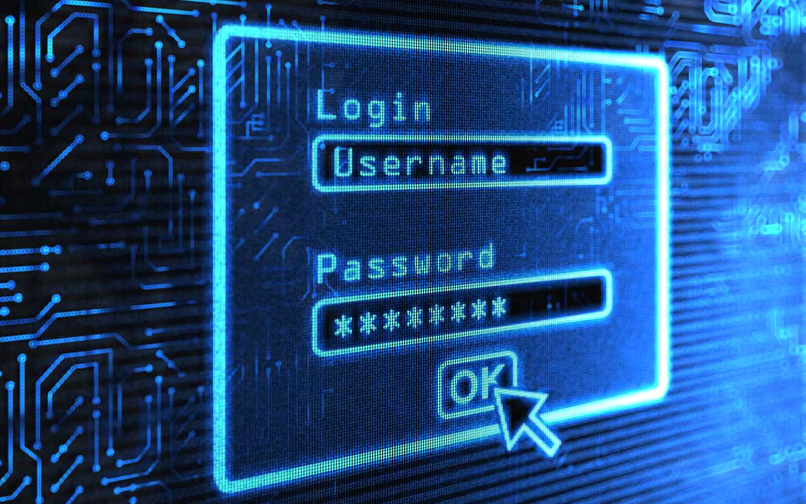

WELCOME TO SECURESHELL

SecureShell is a short, practical tutorial that teaches you how to keep your online accounts safe. Over three lessons you will learn how to build passwords that are hard to guess, how a password manager can remember them for you so you never have to reuse a weak one, and how two-factor authentication adds a second lock on your accounts even if a password ever leaks. Each lesson ends with a short quiz question so you can check what you have learned along the way.
This tutorial is written for anyone who uses the internet every day but has never had a clear, step-by-step guide to account security - students, new employees, or anyone who has ever reused the same password on more than one site. No prior technical background is needed; each lesson explains the terms it introduces.
ABOUT THE TEAM
SecureShell was built by a three-person student team for ISTE 140. Read more about who we are and what each of us worked on on the About page.